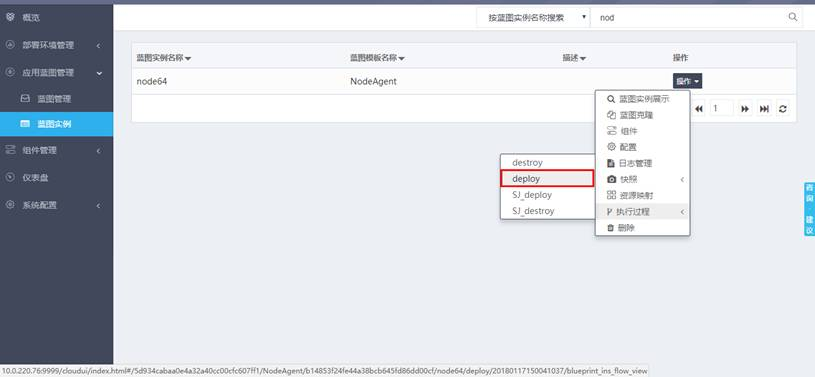
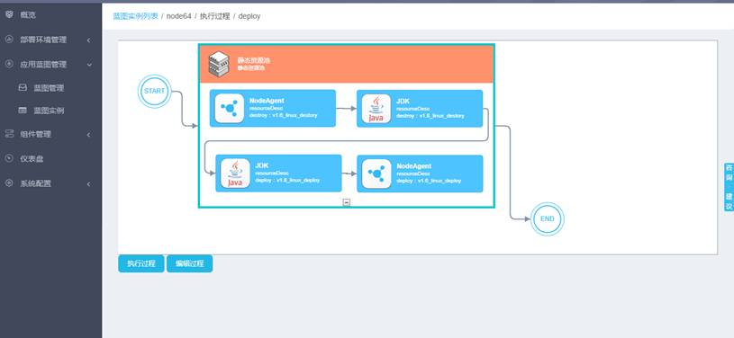
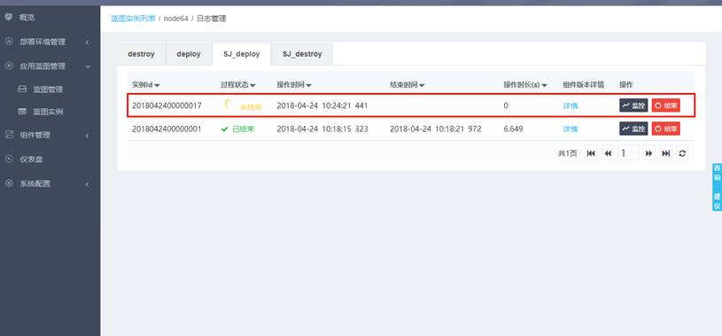
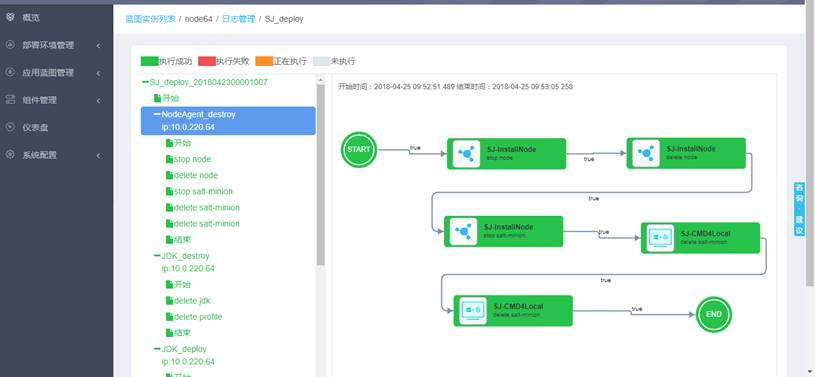

在蓝图实例列表中，找到刚才保存的蓝图实例，点击“操作”->“执行过程”-> deploy，如下图：

进入deploy蓝图过程页面后，点击“执行过程”按钮，流程即开始执行，页面会自动跳转到日志页面：

蓝图实例日志管理页面，该页面会动态刷新执行的过程的状态，第一条即为我们刚才执行的过程，点击“监控”可以查看详细的日志。当过程状态变为“已结束”且颜色为绿色时，表示过程执行成功，NodeAgent安装成功。

